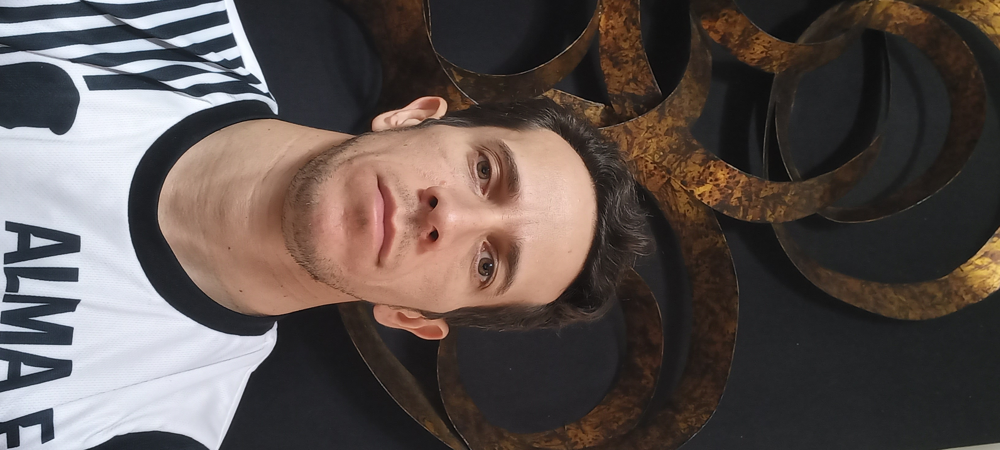

Plataforma de matemáticas, ingeniería estructural, auditoría y normatividad.
Este espacio tiene como propósito la difusión y el análisis riguroso de conocimiento en ingeniería estructural y ciencias aplicadas. Aunque no constituye una plataforma comercial, está abierto a colaboraciones académicas y profesionales.
Biografía del [Dr. Jacinto González Vintimilla]
Obra escrita por Anuar González y varios coautores, como homenaje biográfico y memoria familiar.
Edición privada de autor.
[2021]
Descripción breve:
Este libro recoge la vida, trayectoria y legado del [Dr Jacinto González Vintimilla], a partir de recuerdos, testimonios y documentos familiares.
Contacto: +593990903329